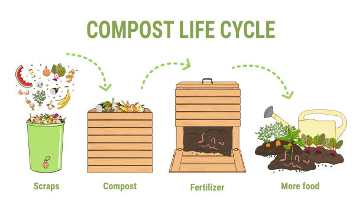

Tentang Pengomposan
Pengomposan adalah proses alami yang mengubah bahan organik menjadi kompos yang kaya nutrisi. Proses ini melibatkan mikroorganisme, seperti bakteri dan jamur, yang memecah bahan organik menjadi humus, yang dapat digunakan sebagai pupuk untuk tanaman.
Manfaat Pengomposan
- Mengurangi jumlah sampah yang dibuang ke tempat pembuangan akhir.
- Meningkatkan kualitas tanah.
- Menurunkan kebutuhan akan pupuk kimia.
- Menghemat biaya pengelolaan sampah.
Cara Membuat Kompos
Berikut adalah langkah-langkah sederhana untuk membuat kompos di rumah:
- Kumpulkan bahan organik seperti sisa sayuran, kulit buah, dan daun kering.
- Siapkan wadah kompos, bisa berupa tempat khusus atau tumpukan di tanah.
- Campurkan bahan basah (sisa sayur) dan bahan kering (daun kering) dengan perbandingan 2:1.
- Jaga kelembapan, jangan terlalu basah atau kering.
- Balik kompos setiap beberapa minggu untuk mempercepat proses.
- Setelah 2-3 bulan, kompos siap digunakan.
Jenis Bahan yang Bisa Didaur Ulang
Beberapa bahan organik yang cocok untuk kompos adalah:
- Sisa sayuran dan buah-buahan
- Kulit telur
- Daun kering dan rumput
- Serbuk gergaji (tanpa bahan kimia)